שבע הערות מאוחדות מאתר הסקירה, עם צילומי מסך, אבחון ופתרון מוצע. בלי הפקה — רק לאישור.
7תיקונים מאוחדים
1תיקון עריכה בחינם
6דורשים הפקה מחדש · 10 שוטים
12.10$עלות מוערכת ב־fal 720p · חלופה ב־Kie: 5.60$
1. הזקנה אינה אותה דמות הפקה מחדש
קטע 1 · 0:26 (גלובלי 0:26) · שוטים 03-05 «שליחה זקנה בלילה» ו־03-06 «גם חדרה ריק» · ארמון
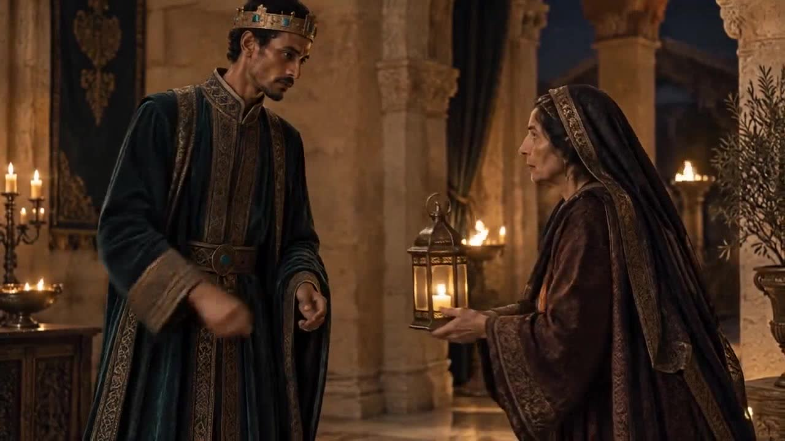
03-05 · 0:24 · השוט הקודםשררה זקנה: פנים צרות, שיער כהה, רעלה שחורה, שמלה בורדו. המלך (C5) מוסר לה עששית.
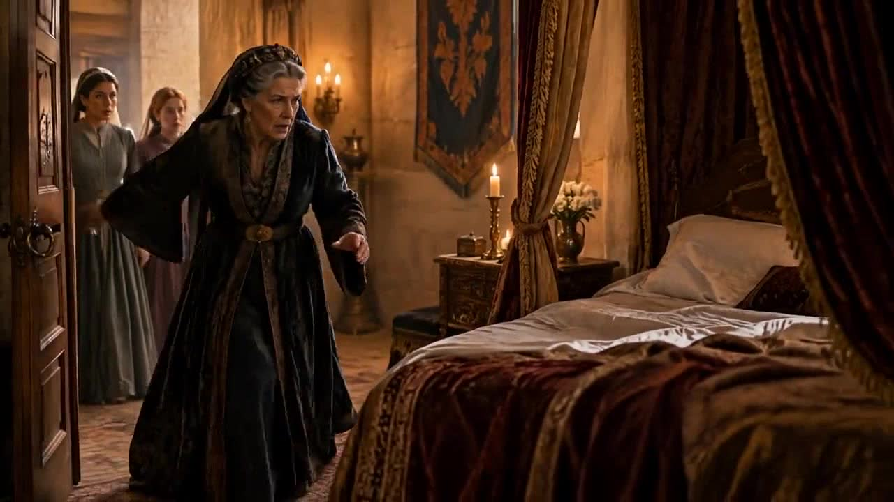
03-06 · 0:27 · נקודת ההערהנכנסת לחדר המיטה הריק אישה אחרת לגמרי: פנים מלאות, שיער אפור־כסוף, שמלה כהה עם חגורה.
הבעיה
ב־03-05 המלך שולח שררה זקנה בלילה. בשוט הבא, 03-06, מי שנכנסת לחדר בת הקיסר ונרתעת מול המיטה הריקה היא דמות אחרת: עצם הפנים, צבע השיער והבגד אינם תואמים. לשררה הזקנה אין דמות נעולה בספרייה — היא מופיעה בתוכנית רק כ־extra — ולכן המודל המציא אישה חדשה.
הפתרון המוצע
לנעול פריים מ־03-05 (האישה עם הרעלה השחורה) כרפרנס של השררה הזקנה, ולייצר מחדש את תמונת הפתיחה ואת הסרטון של 03-06 בלבד, עם אותה דמות נכנסת לחדר ונרתעת מול המיטה הריקה. שני המלווים בפתח יכולים להישאר.
שיטה: רפרנס מפריים קיים (בחינם) + תמונת פתיחה + image-to-video. כלי: Kie Nano Banana / Flux לתמונה, ואז fal או Kie לסרטון. שוט אחד, כ־5 שניות (אורך השוט 4.2 שניות).
חלופה זולה · Kie Kling 3.00.42$ תמונה כ־0.04$ + 5 שנ׳ × 0.0755$
הערות שמוזגו: 10.11 קטע 1 0:26 — «זה לא אותה דמות». · 8.11 סרטון מלא 0:27 — «הזקנה לא נראית אותו דבר כמו השוט הקודם».
2. האנשים אינם השרים מהשוט הקודם הפקה מחדש
קטע 1 · 0:46 ו־0:52 (גלובלי 0:46 / 0:52) · שוטים 03-08 «האבות מגיעים», 03-09 «זעם השרים», 03-10 «מה חטא המלך», וגם 03-11 «להעבירו ממלכותו» · ארמון
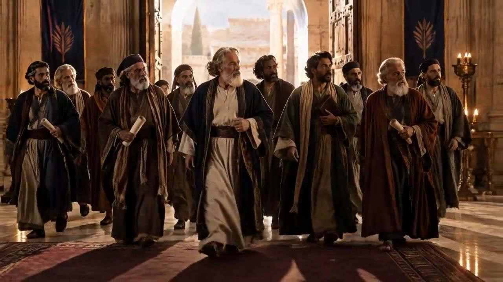
03-08 · 0:43 · השוט הקודםאחד עשר האבות: גברים מבוגרים, זקנים לבנים, בגדי מסע בגוני אדמה, מגילות ביד.
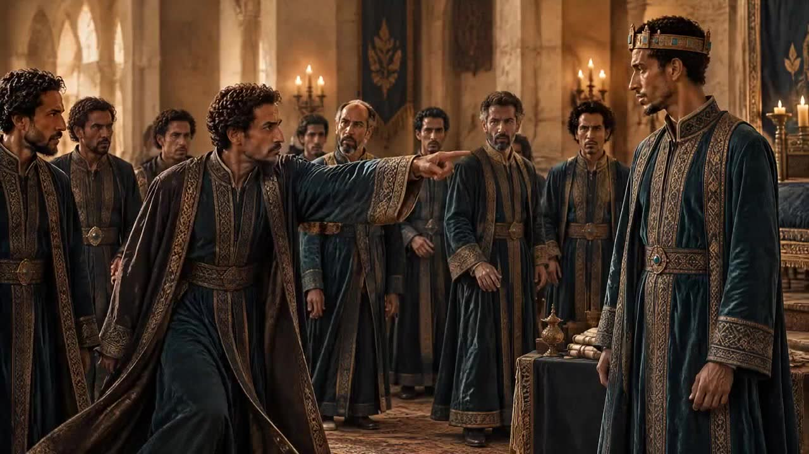
03-09 · 0:46 · נקודת ההערהקבוצה אחרת: גברים צעירים במדי חצר ירוקים־זהובים, בלי זקנים לבנים ובלי בגדי המסע.
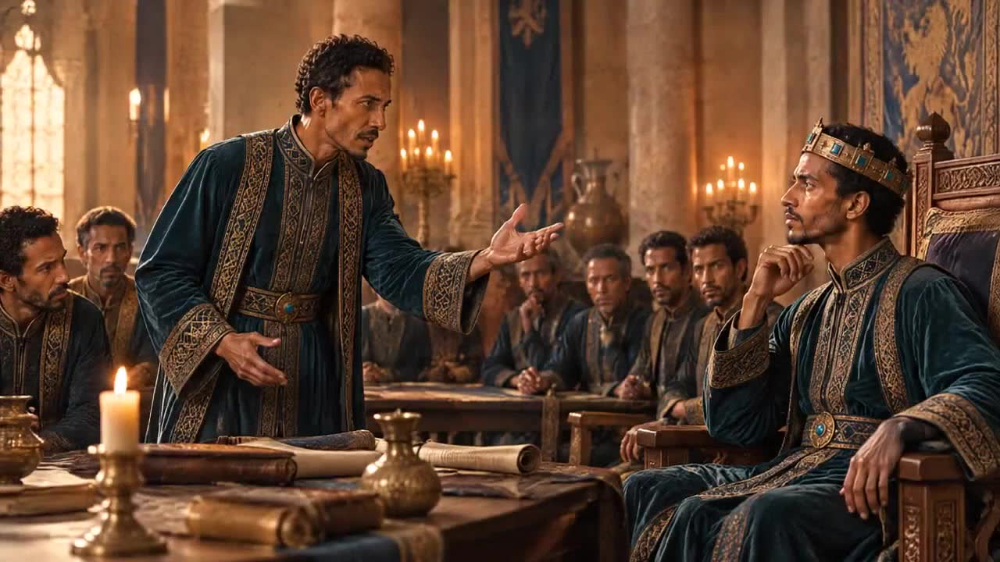
03-10 · 0:52גם כאן — אנשי חצר, לא האבות מ־03-08.
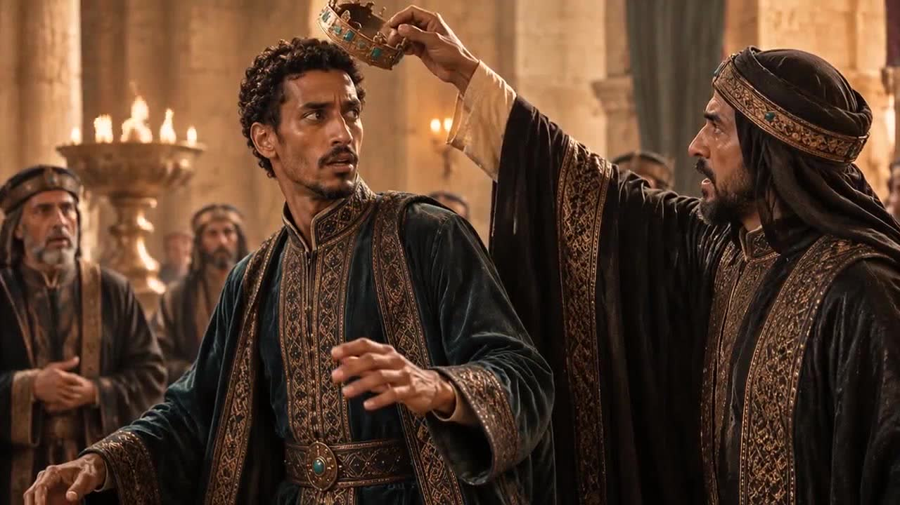
03-11 · 0:59 · השוט הבאמי שמסיר את הכתר הוא שוב דמות חדשה, לא אחד מהאבות.
הבעיה
ב־03-08 מגיעים לארמון אחד עשר אבות הבנות — שרים מבוגרים בבגדי מסע. ב־03-09, בדיוק כשהם אמורים לאיים על המלך ולשלח אותו, מופיעה קבוצה אחרת לגמרי: צעירים במדי חצר שדומים לבגדי המלך (C5). אותו כשל נמשך ב־03-10 וב־03-11. לשרים־האבות אין גיליון דמויות נעול; כל שוט המציא פנים חדשות.
הפתרון המוצע
לנעול פריים מ־03-08 כרפרנס קבוצתי של אחד עשר האבות, ולייצר מחדש את תמונות הפתיחה ואת הסרטונים של 03-09, 03-10 ו־03-11, עם אותם פנים מול המלך (C5, רפרנס 06-palace-king-v2.png). ב־03-09 שר מוביל מצביע ליציאה; ב־03-10 שר שני מבקש להקל; ב־03-11 מסירים את הכתר — כפי שבתוכנית.
שיטה: רפרנס מפריים קיים + 3 תמונות פתיחה + image-to-video. שלושה שוטים, כ־18 שניות ייצור (7+6+5, לפי התוכנית).
חלופה זולה · Kie Kling 3.01.48$ 3 תמונות + 18 שנ׳ × 0.0755$
הערות שמוזגו: 10.11 קטע 1 0:46 — «האנשים פה לא נראים כמו השרים של השוט הקודם». · 8.11 סרטון מלא 0:46 — «מי שמאיים פה על המלך אלו השרים מהשוט הקודם». · 8.11 סרטון מלא 0:52 — «גם הקטע הזה והבא צריך שיהיה שם את השרים».
3. דיליי בין התפירה לקריינות עריכה בחינם
קטע 2 · 0:49 (גלובלי 4:00) · שוטים 03-40 «טוענות את הספינה», 03-41 «תופרות בגדי זכרים», 03-42 «מפליגות בתחפושת»
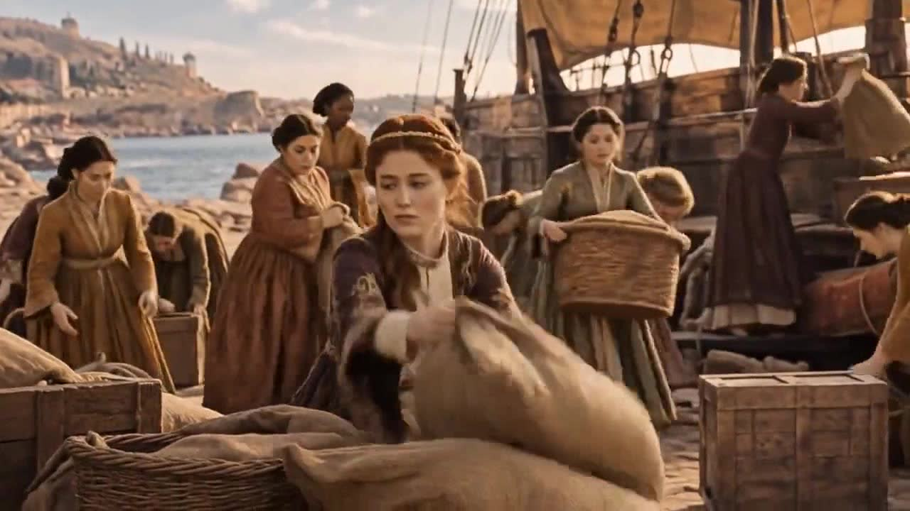
03-40 · גלובלי 3:52קריינות: «וטענו כל הספינה עם דברים יקרים…»התמונה תואמת — טעינת מטען בחוף.
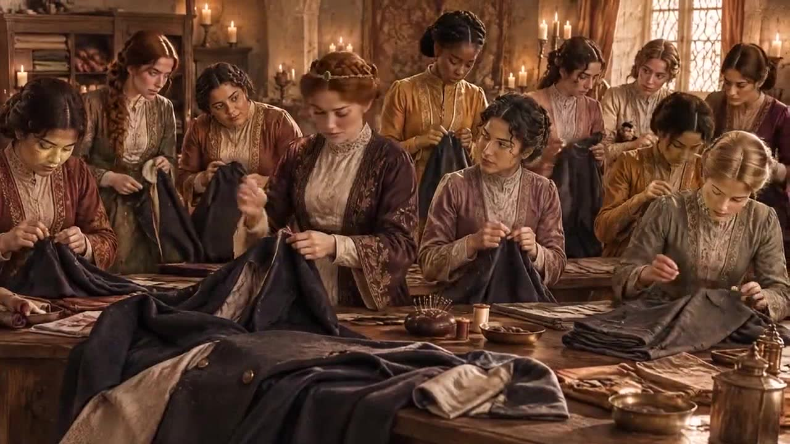
03-41 מתחיל · 3:55עדיין נשמע: «זהב ואבנים טובות שמצאו שם»כבר רואים תפירת בגדי זכרים, בזמן שהקריינות עדיין על המטען.
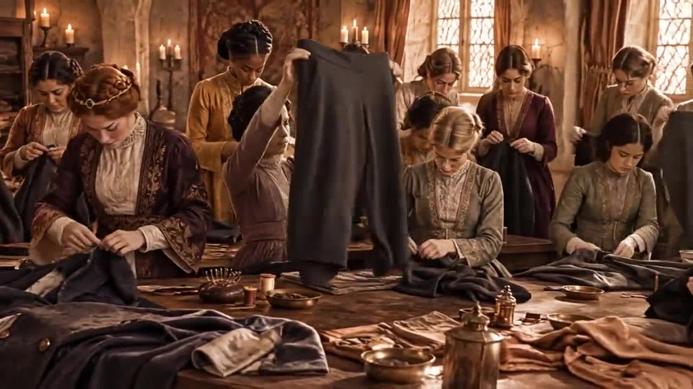
נקודת ההערה · 4:00רק עכשיו: «שלא לילך עוד מלובש כמו נשים»התפירה על המסך כבר כ־5 שניות, והקריינות שלה מתחילה באיחור של כ־3.3 שניות.
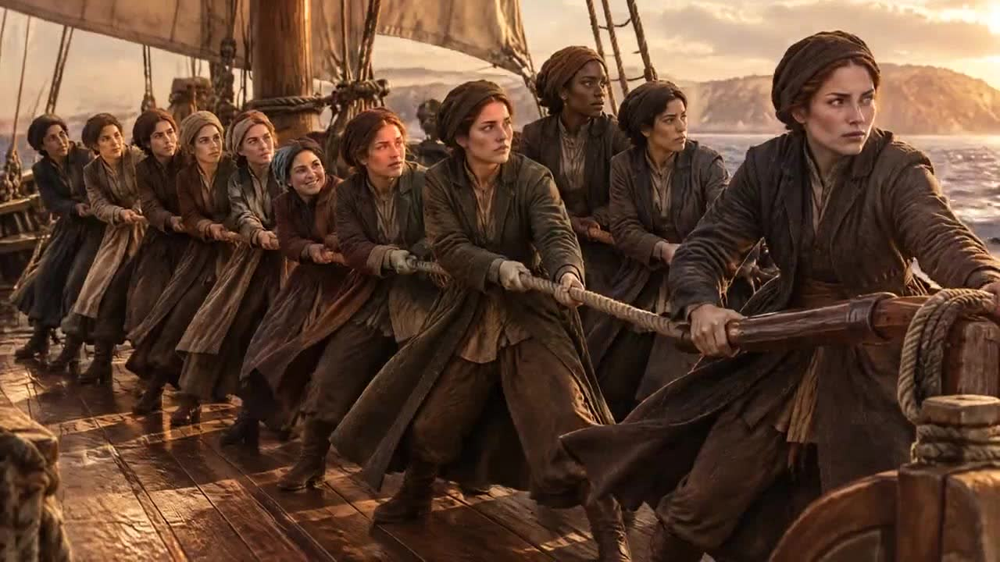
03-42 מוקדם · 4:01עדיין: «ותפרו להם בגדי זכרים / מלבושי אשכנז»התמונה כבר על הספינה בתחפושת, לפני סוף קריינות התפירה.
הבעיה
בסרטון עצמו (תמלול מקומי של חלון הקול) יש אי־סנכרון כפול: שוט התפירה (03-41) מתחיל ב־3:55 בזמן שקריינות המטען של 03-40 עדיין רצה עד בערך 3:56–3:58. קריינות התפירה («והסכימו שלא לילך עוד מלובש כמו נשים ותפרו להם בגדי זכרים, מלבושי אשכנז») מתחילה רק סביב 3:58 — כ־3.3 שניות אחרי שהתמונה כבר בחדר התפירה. אחר כך, בסביבות 4:01, כבר חותכים לספינה, בזמן ש«ותפרו להם בגדי זכרים, מלבושי אשכנז» עוד נשמע.
הפתרון המוצע
עריכה בלבד, בלי ייצור מחדש. להאריך את 03-40 (או להקפיא את הפריים האחרון של החוף) עד סוף קריינות המטען. להתחיל את תמונת 03-41 עם תחילת קריינות התפירה (סביב 3:58). להשאיר את חדר התפירה עד סוף «מלבושי אשכנז» (סביב 4:03), ורק אז לחתוך ל־03-42 עם «והלכו עם הספינה». אם ייחסר מעט וידאו של תפירה — להקפיא את הפריים האחרון של 03-41 לשנייה־שתיים.
שיטה: חיתוך וסנכרון בטיימליין. כלי: עריכה בלבד. אפס שוטים לייצור מחדש.
עריכה בלבד0$ הזזה של כ־3 שניות, בלי fal או Kie
הערה: 12.11 קטע 2 0:49, קולית — «יש פה איזה דיליי מסוים. קודם רואים על המסך שמתחילות עם הבגדים, ורק אחר כך רואים אותם כשמתחילים לשמוע את הקריינות של זה. אז יש פה איזה סנכרון של כמה שניות שצריך לעשות אותו.»
4. בן המלך מופיע עם כתר הפקה מחדש
קטע 2 · 0:54 (גלובלי 4:05) · שוט 03-43 «מלך זקן ובן יחיד» · ארמון
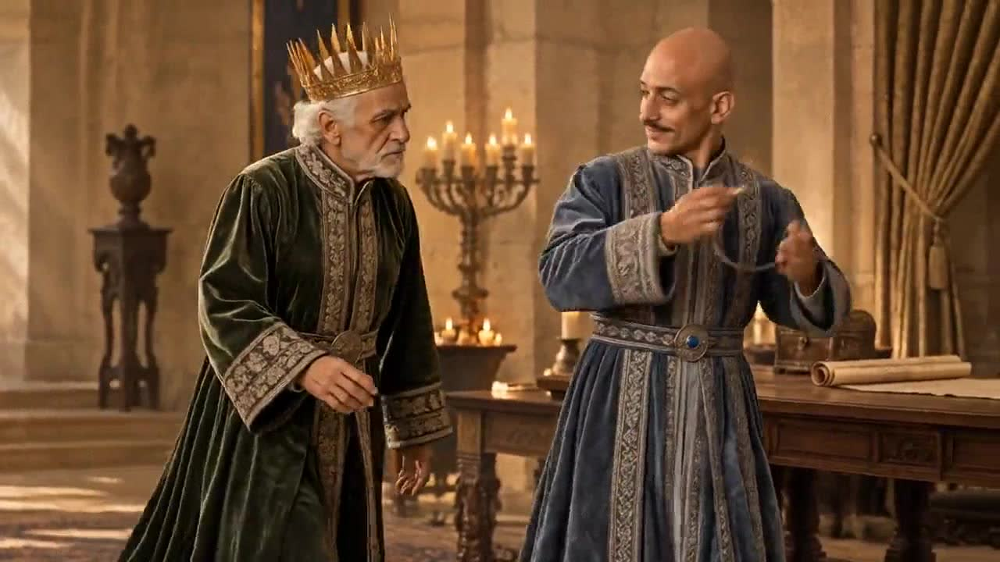
03-43 · גלובלי 4:07 · נקודת ההערההאב (C9) חובש כתר זהב — נכון. הבן הקרח (C6) חובש נזר כסוף־כחול על הראש, בניגוד לתוכנית ולכלל «רק האב מוכתר».
הבעיה
בתוכנית השוט נכתב במפורש: «האב הזקן צועד אל בנו הקרח; רק האב מוכתר», וברפרנס 07-bald-king-v2.png הבן אמור להיות בגלוי־ראש. על המסך הבן חובש נזר לכל אורך 03-43. (בסוף השוט אף רואים שמוסרים לו נזר בטקס — זה כבר שייך יותר ל־03-44, «מסר מלכותו לבנו», אבל גם בתחילת 03-43 הכתר כבר על ראשו.)
הפתרון המוצע
לערוך את תמונת הפתיחה של 03-43 ולהסיר את הנזר מראש C6 (Kie Nano Banana edit), עם רפרנסים נעולים 16-old-king-father-v2.png (האב, עם כתר) ו־07-bald-king-v2.png (הבן, בלי כתר). אחר כך לייצר מחדש את הסרטון מאותה תמונה: האב צועד אל בנו, רק האב מוכתר. שוט אחד, כ־5 שניות (אורך 4.72).
חלופה זולה · Kie Kling 3.00.40$ עריכת תמונה + 5 שנ׳ × 0.0755$
הערות שמוזגו: 12.11 קטע 2 0:54, קולית ראשונה — «שבקטע הזה הוא יהיה בלי הכתר, המלך.» · 12.11 קטע 2 0:54, קולית שנייה (דיוק) — «שבקטע הזה בן המלך יהיה בלי כתר.» · 5.11 סרטון מלא 4:07 — «בקטע הזה הוא צריך להיות בלי כתר».
5. הם צריכים להתקרב אליה, לא היא אליהם הפקה מחדש
קטע 2 · 3:11 (גלובלי 6:22) · שוט 04-14 «שתי הספינות נפגשות» · ים
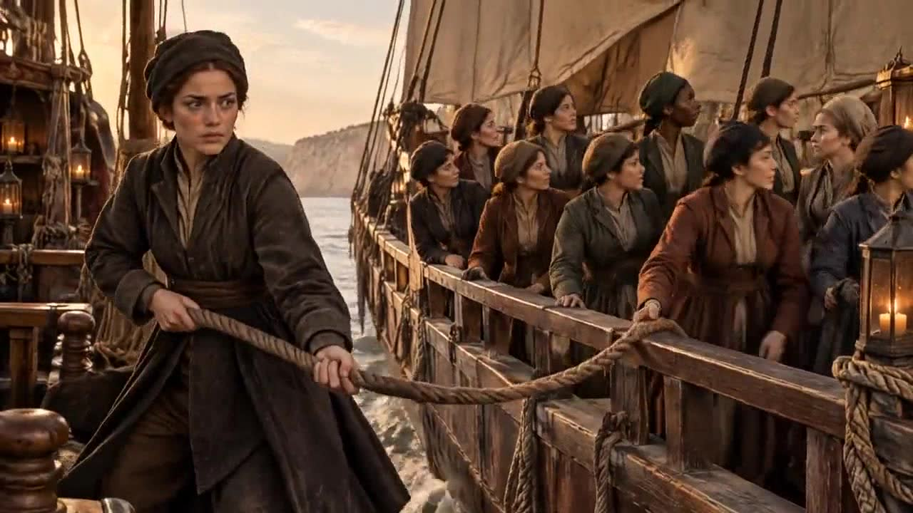
04-14 · 6:19בת הקיסר עומדת לבד על סיפון אחד ומושכת חבל לעבר הספינה השנייה — היא מתקרבת אליהם, לא הם אליה. החברות לא איתה על הסיפון.
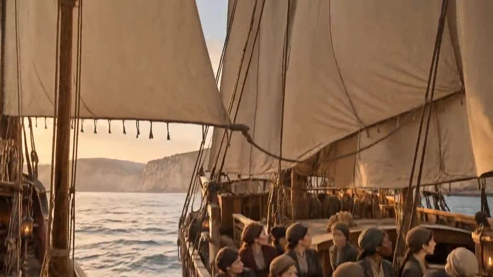
04-14 · 6:22 · נקודת ההערהשתי הספינות זו לצד זו, בלי לראות בבירור את ספינת המלך מתקרבת אליה, ובלי שהיא קושרת את החבל על הסיפון שלה עם חברותיה.
הבעיה
הסיפור והתוכנית: ספינת המלך מתקרבת אל ספינת בת הקיסר; היא עומדת על הסיפון שלה עם אחת עשרה החברות וקושרת חבל קשירה. על המסך היא לבד בצד אחד, מושכת חבל לעבר הספינה האחרת — כלומר היא מתקרבת אליהם. החברות נראות על הסיפון הנגדי, לא לצדה.
הפתרון המוצע
לייצר מחדש את תמונת הפתיחה ואת התנועה של 04-14: שתי הספינות; ספינת המלך (שני שרים, בלי כתר) מתקרבת אל ספינתה; בת הקיסר (P1, רפרנס 09-princess-traveler-v2.png) עומדת על הסיפון שלה עם אחת עשרה החברות (G1D, 12b-ministers-daughters-disguised-v2.png) וקושרת את חבל הקשירה. שוט אחד, כ־5–6 שניות (אורך 5.7).
04-15 · 6:27 · נקודת ההערההחברות כולן על הספינה השמאלית. בת הקיסר עומדת לבד על הספינה הימנית ומדברת אליהן — כאילו היא אנשי ספינת המלך. השרים הגברים אינם במסך.
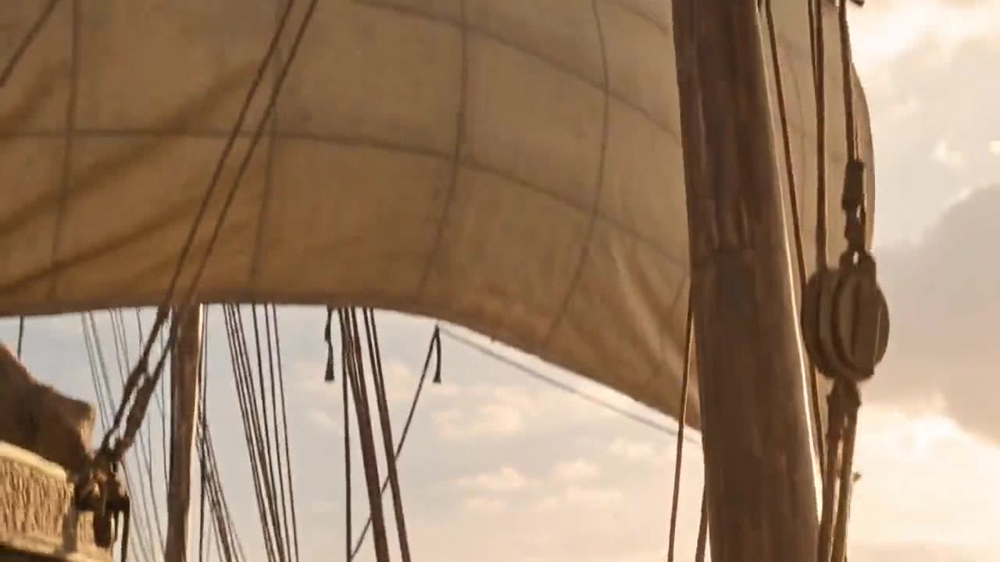
04-16 · 6:35 · «גם בקטע הזה»כמעט אין סצנה: פריים של מפרש, בלי בת הקיסר, בלי החברות ובלי שיחה בין שתי הספינות.
הבעיה
לפי הסיפור והתוכנית, בת הקיסר וכל חברותיה נשארות יחד על הספינה שלהן, ואנשי ספינת המלך (שני שרים) מדברים אליהן מעבר לרווח: «אל תיראו», ואחר כך שואלים אם יש ביניהן רופא. על המסך ב־04-15 היא מופרדת מהחברות ועומדת על הספינה הנגדית — והיא זו שמדברת. ב־04-16, שאמור להמשיך את השיחה, כמעט לא רואים אותן בכלל. בתוכנית של 04-16 אף חסר הרפרנס ל־G1D (החברות), ויש רק P1.
הפתרון המוצע
לייצר מחדש את 04-15 ו־04-16. בשניהם: בת הקיסר (P1, 09-princess-traveler-v2.png) עם אחת עשרה החברות (G1D, 12b-ministers-daughters-disguised-v2.png) על הספינה שלהן; שני שרים (בלי כתר) על ספינת המלך, מדברים מעבר לרווח. ב־04-15 שר פונה בכפות ידיים פתוחות («אל תיראו»). ב־04-16 שר שואל אם יש רופא ומצביע אל המים. להוסיף את G1D גם לתוכנית של 04-16.
שני שוטים, 4 קליפים של 5 שניות (8.8 + 8.3 שניות בפועל).
חלופה זולה · Kie Kling 3.01.59$ 2 תמונות + 20 שנ׳ × 0.0755$
הערות שמוזגו: 10.11 קטע 3 0:00 — «האישה צריכה להיות ביחד עם כל חברותיה בספינה». · 12.11 קטע 3 0:04, קולית — «בת הקיסר צריכה להיות באונייה עם כל הבנות.» · 12.11 קטע 3 0:12, קולית — «גם בקטע הזה בת המלך צריכה להיות באונייה השנייה עם כל הבנות.» · 5.11 6:28 — «הדוברת צריכה להיות בסירה עם כל הבנות ובספינה של המלך אחר השומרים מדבר איתם». · 5.11 6:33 — «היא צריכה להיות בספינה השניה והם מדברים בין שתי הספינות».
7. התנועות מוזרות — הוא צריך לעמוד לפניה הפקה מחדש
04-21 · 6:58 · נקודת ההערההשר מאחוריה ומצדד, מושיט יד; היא הולכת ומשקיפה הצידה. הוא לא עומד לפניה ולא מדבר מולה. התנועה קפואה וחוזרת על עצמה.
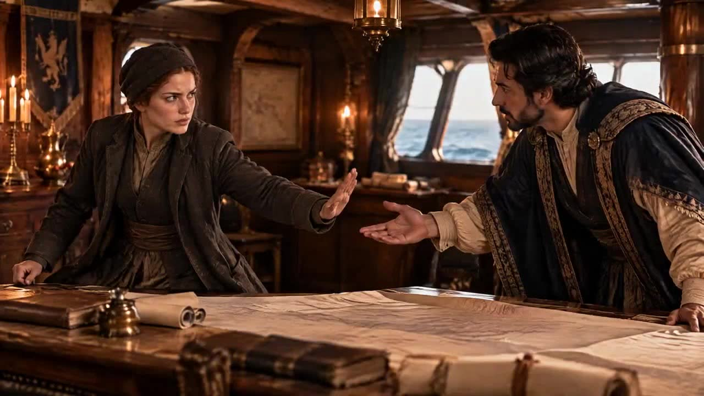
04-22 · 7:04חיתוך חד לתא עם מפה. היא עוצרת אותו בכף יד קפואה, בלי התנועה העדינה שבתוכנית, ובלי המשך ההליכה מהסיפון.
הבעיה
יהודה ביקש: השר אמור להיות לפניה ולדבר איתה; היא מתעלמת ממנו תוך כדי שהיא הולכת; והוא ממשיך לרדוף אחריה. ב־04-21 הוא מאחוריה, והפריימים כמעט קפואים. ב־04-22 נחתכים בבת אחת לתא עץ — קפיצת מקום שמרגישה מוזרה — והתנועה שם גם היא קשיחה (כף יד במקום «מסיטה בעדינות את ידה מול היד המושטת, ללא מגע»).
הפתרון המוצע
לייצר מחדש את התנועה ב־04-21 על הסיפון הפתוח, עם רפרנס P1 09-princess-traveler-v2.png: שר עומד לפניה ומדבר ומבקש שתבוא עמם; היא ממשיכה ללכת ומתעלמת; הוא פונה וממשיך אחריה. ב־04-22 — או להישאר על הסיפון לרצף טבעי, או להישאר בתא אבל עם תנועה חדשה: היא עונה «אינני רופא» ומסיטה בעדינות את היד המושטת, בלי מגע. שני שוטים, כ־16 שניות ייצור (5+5+6).
חלופה זולה · Kie Kling 3.01.29$ 2 תמונות + 16 שנ׳ × 0.0755$
הערות שמוזגו: 12.11 קטע 3 0:35, קולית — «התנועות פה טיפה מוזרות, הוא אמור להיות כאילו לפניה ולדבר איתה, והיא צריכה כזה להתעלם ממנו, תוך כדי שהיא הולכת, והוא כאילו ממשיך כזה לרדוף אחריה.» · 12.11 קטע 3 0:41, קולית — «התנועות פה טיפה מוזרות.»